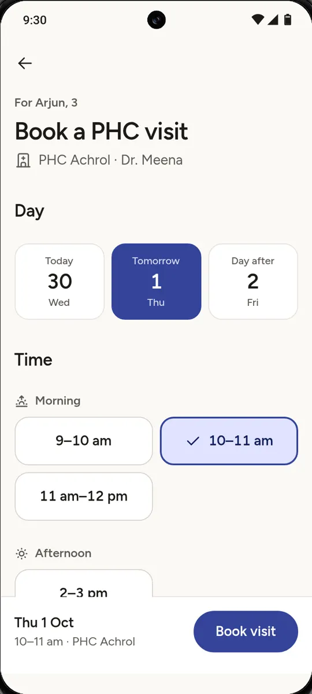
Never guess a slot
A booking syncing from another phone can take the slot she picked. One rule on every surface: nothing is booked, and she is told so.
One care record for families, ASHA workers and the village clinic—reachable from any phone.
In villages near Jaipur, a concern starts at home, is screened by the ASHA worker, and is seen at the primary health centre. Arogya Line keeps it one record the whole way, so nobody starts again.
The ASHA’s phone is a work queue, not a dashboard. It starts from the families she already knows, ranks people by what is due, and puts the next action in words.
Saving never waits for signal. The visit sits on her phone as “1 visit to send”, and joins the doctor’s list the moment it syncs. Offline is a calm state, not an error.
No app to install. They call the number on their card, key in the family ID, and hear the doctor’s advice by name. 9 repeats. 0 reaches a person.
The day in time order. Urgency marks a row but never reorders it, and the consult opens on what the ASHA found, not a blank page.
Open the dashboardThe ASHA app and the voice line ask Arjun’s questions in the same order and reach the same result, because they share one piece of logic. Tap Yes or No on the phone.
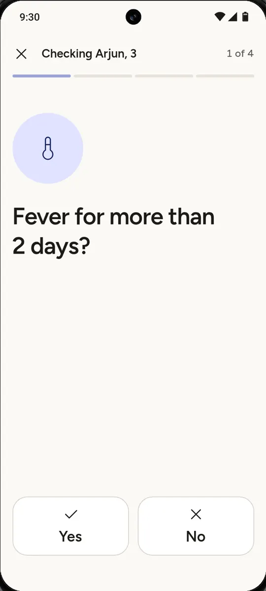
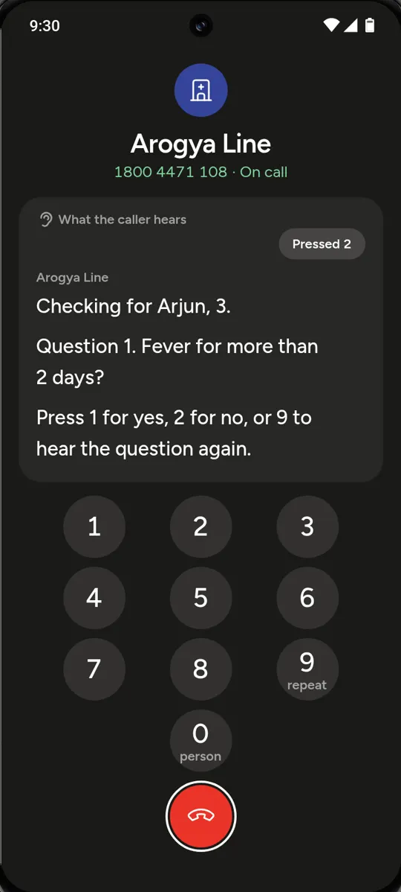
Illustrative questions, not clinical guidance. A danger sign answered yes stops the check at once. Two other yeses mean a visit.
Healthcare rarely follows the happy path. Explore what the record does when it could have guessed.

A booking syncing from another phone can take the slot she picked. One rule on every surface: nothing is booked, and she is told so.
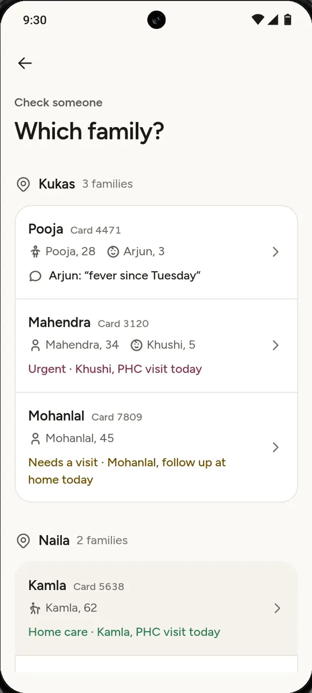
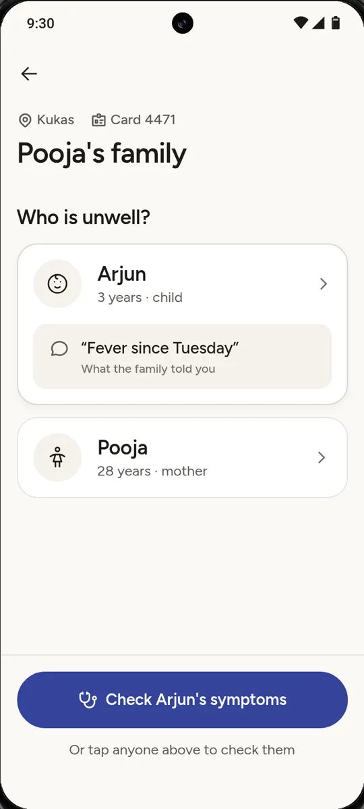
She picks the household, then the person. Today has one row per person, and says when someone else in the house needs her too.
“Offline · 1 visit to send” sits on the record while there is no signal, then reads “Sent to the PHC” once it is sent.
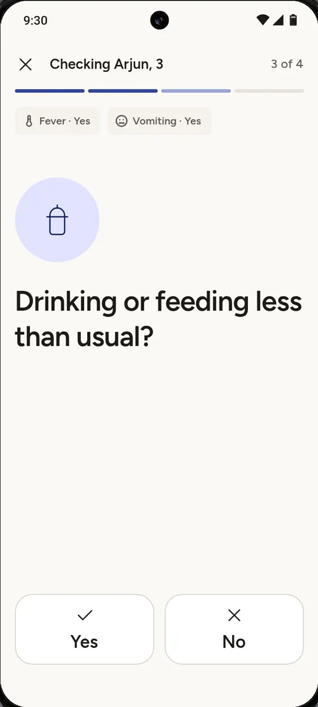
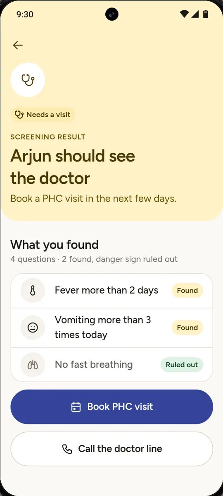
An unfinished check is never a result. The result shows what was found and what was ruled out, and it is a screening, never a diagnosis.
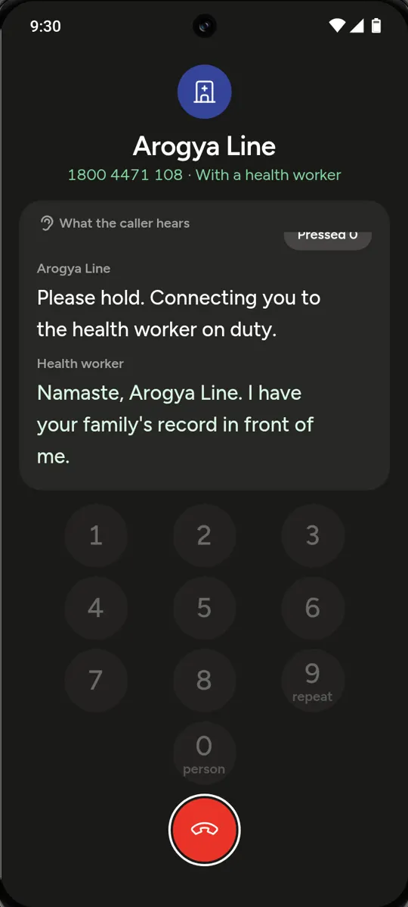
0 reaches a health worker from anywhere in the call, and books nothing by itself. No name is read aloud on a card number alone.
The system screens and suggests. A person decides, and a person is always one key away.
Pink, yellow and green from the IMNCI chart the ASHA trained on. Each one always travels with a word or an icon.
Every result shows what was found and what was ruled out. It is a screening result, never a diagnosis, and a person decides what happens next.
From anywhere in the call, without booking anything. No name is read aloud on a card number alone.
From a fever at home to a follow-up call, find out how one record moves between three people.
A smartphone for the ASHA, any phone for the family, a desktop at the clinic. Each one reads and writes the same record, so work carries on wherever it is picked up.
On a real call the line speaks Hindi. Here, English captions stand in for it.
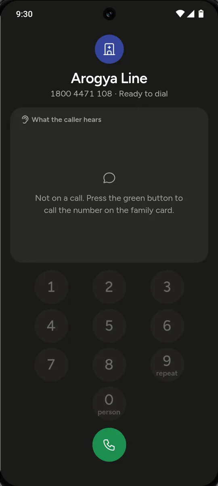
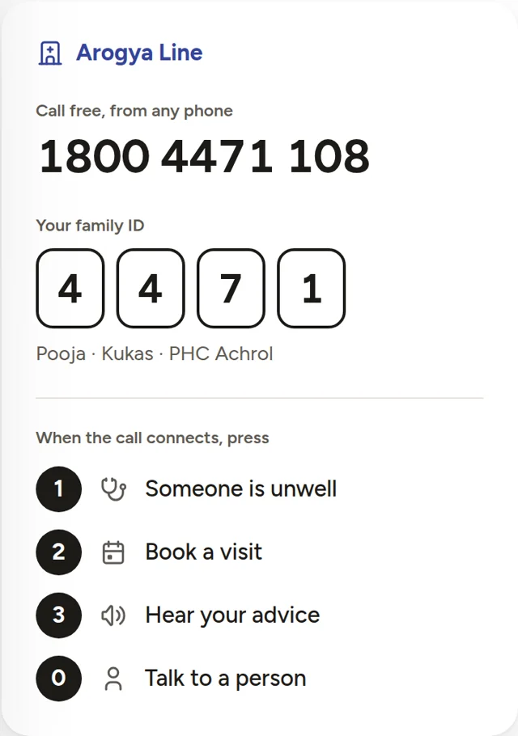
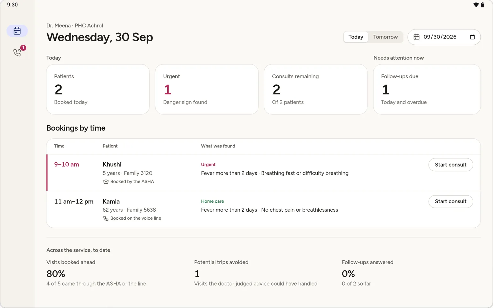
Who needs her next and what to do, ranked by what is due. It works the same with no signal.
The prototype runs in any browser, with no sign-in and no real data. The guided walkthrough follows one patient, Arjun, through all three surfaces.